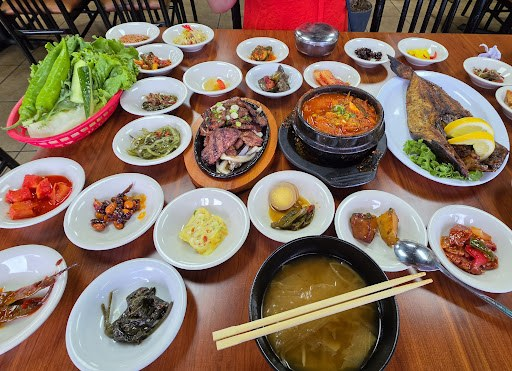
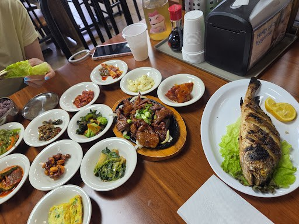

Sizzling Korean meat
WHAT'S ON THE TABLENOT JUST A MEAL.
NOT JUST A MEAL.
THE WHOLE SPREAD.
Come for your favorite main dish. Stay for the little plates that make the table feel complete.
Select a language to translate this website.
Gather around a table of Korean favorites—from vibrant banchan and comforting stews to sizzling meats and grilled fish. Food made for sharing, one bite at a time.

MADE TO SHARE / LAS VEGASCome for your favorite main dish. Stay for the little plates that make the table feel complete.

At K-SSAMbap, the table is part of the experience. Fresh greens, rice, colorful sides, and deeply flavored Korean dishes invite you to slow down, mix and match, and share.
SEE THE FULL MENUReal food, real tables, and a look at K-SSAMbap. Tap play to watch a clip.
Video clips from supplied customer media. Confirm permission before commercial publication.
Read diners’ firsthand comments about the food, banchan and dining experience on a public restaurant listing.
VIEW CUSTOMER REVIEWSDiscover customer-submitted food photos and videos from the dining experience.
BROWSE PHOTOS3909 W Sahara Ave, Suite 1 · Las Vegas, Nevada. Check current details with the restaurant before you go.
GET DIRECTIONS3909 W Sahara Ave, Suite 1
Las Vegas, NV 89102